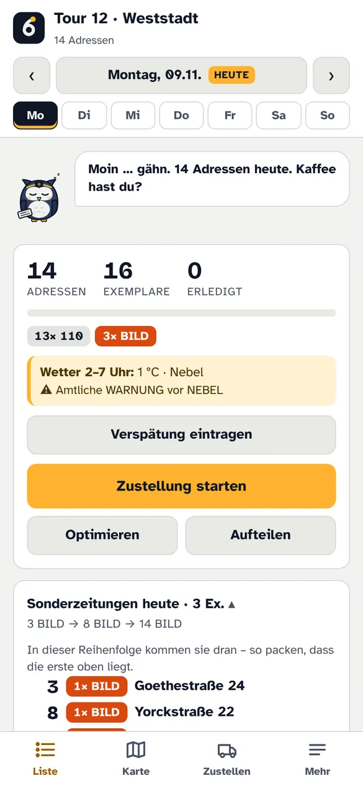
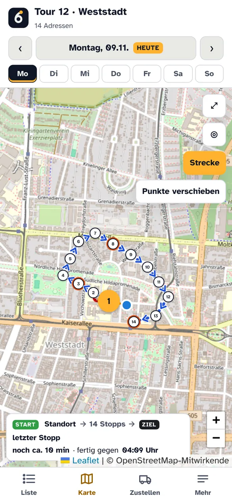
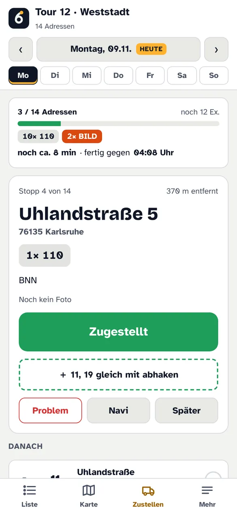
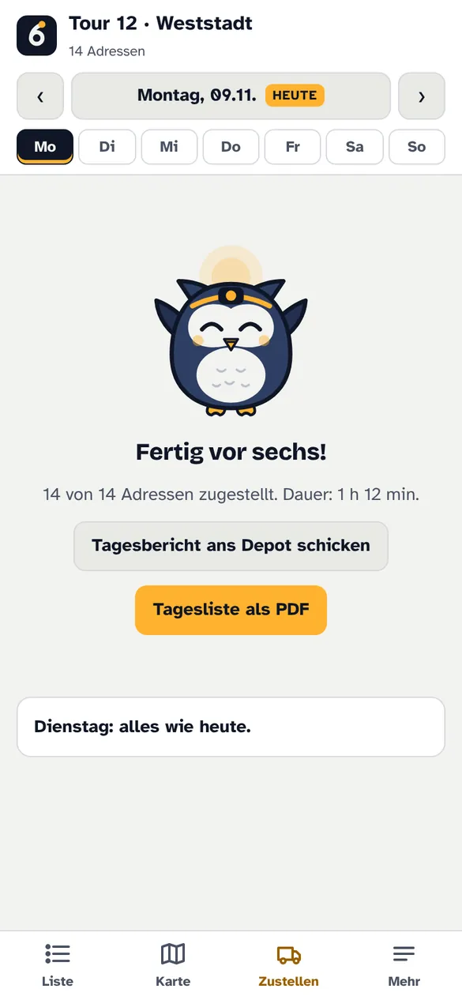

Die kostenlose App für alle, die Zeitungen austragen. Abo-Liste rein – und du siehst jeden Morgen, wohin du musst und was in welchen Briefkasten gehört.
Am PC? Handy-Kamera auf den Code halten – dann direkt aufs Handy laden.
So läuft dein Morgen



✓ Uhlandstraße 5 zugestellt
Taste drücken
✓ zugestellt – weiter zur 19
04:12
Montag, 9. November
vorsechsTour 12 · Weststadt
Körnerstraße 9
2× BNN · noch 4 Adressen
ZugestelltSpäterNavi
Ohne Entsperren

Außerdem: Tour an die Vertretung weitergeben · Verspätung melden · Wetter-Warnung · Offline-Karte · Abgleich mit dem PC
KostenlosKein Abo, keine Werbung
Ohne KontoLaden, Liste rein, los
Deine DatenNamen bleiben auf deinem Handy
So installierst du's auf Android
Oben auf „Für Android laden“ tippen.
Datei öffnen. Android fragt einmal, ob dein Browser Apps installieren darf – „Zulassen“.
Installieren tippen, öffnen, Liste importieren. Fertig.
So installierst du's am PC
Auf „Für Windows-PC“ klicken und die Datei öffnen.
Windows zeigt „Der Computer wurde durch Windows geschützt“. Auf „Weitere Informationen“ klicken, dann „Trotzdem ausführen“.
Fertig. Mit dem Handy koppeln geht unter Mehr → Abgleich mit PC.
Warum warnt mein Gerät?
Windows: „unbekannter Herausgeber“Windows kennt nur Programme, die mit einem gekauften Zertifikat unterschrieben sind (ein paar hundert Euro im Jahr) oder die schon sehr viele Leute geladen haben. vorsechs ist neu und kostenlos – deshalb die blaue Warnung. Das heißt nicht, dass etwas gefunden wurde, sondern nur: „kenne ich noch nicht“.
Android: „unbekannte Quelle“Android warnt bei jeder App, die nicht aus dem Play Store kommt. Play Protect fragt evtl. noch, ob du die App prüfen lassen willst – kannst du ruhig machen. Danach „Trotzdem installieren“.
Was die App darfNur Standort (für die Route), Benachrichtigungen (Sperrbildschirm), Vibration und Internet. Kein Zugriff auf Kontakte, Mikrofon, Fotos oder Nachrichten. Namen aus deiner Liste verlassen dein Handy nie – Adressen gehen nur ohne Namen an die Kartensuche.
Selbst nachprüfen – Virenscan und Prüfsummen
Beide Dateien sind bei VirusTotal mit über 60 Virenscannern geprüft:
Windows: in PowerShell Get-FileHash vorsechs-Setup.exe eingeben und vergleichen.
Fragen
Kostet das was?Nein. Für Zusteller ist vorsechs kostenlos.Warum nicht im Play Store?Kommt noch. Bis dahin gibt's die App hier direkt – gleiche App, nur ohne Store.Funktioniert das mit meiner Liste?Gebaut für die Aboverzeichnisse der BNN. Andere Listen als Excel/CSV gehen auch – einfach ausprobieren.Wer steckt dahinter?Ein Zeitungszusteller aus Karlsruhe, der jeden Morgen selbst austrägt und die App für sich gebaut hat.